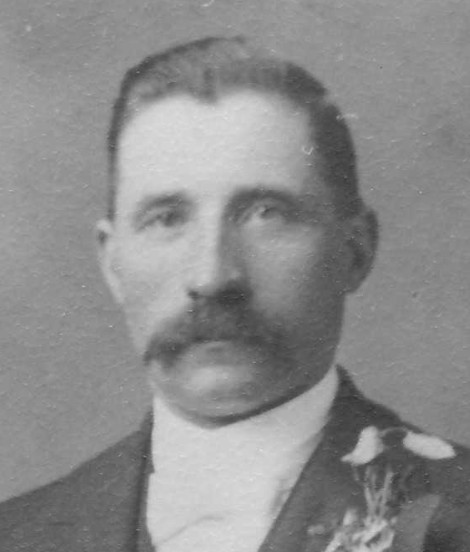
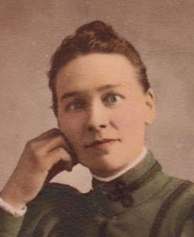

Född 21 dec 1909 i Decorah, Winneshiek County, Iowa, USA 1 .
Död 14 jul 1986 i Rochester, Olmsted County, Minnesota, USA 2 .

F Anders Fredrik Eliasson Karlsson.Född 12 jun 1856 i Mörtebäck, Hannäs (E) 3 .
Död 17 apr 1927 i Decorah, Winneshiek County, Iowa, USA 4 .
Född 10 dec 1816 i Mörtebäck, Hannäs (E) 5 .
Död 31 okt 1867 i Mörtebäck, Hannäs (E) 6 .
FFF Karl Nilsson.

Född 13 nov 1776 i Mörtebäck, Hannäs (E) 7 .
Död 21 sep 1848 i Mörtebäck, Hannäs (E) 8 .
FFM Kajsa Karlsdotter.
Född 26 sep 1777 i Hällingsfall, Hannäs (E) 9 .
Död 19 jun 1856 i Mörtebäck, Hannäs (E) 10 .
 FM
Sara Fredrika Andersdotter.
FM
Sara Fredrika Andersdotter.
Född 12 jul 1830 i Odensvi (H) 11 .
Död Attest 018618 11 jul 1915 i Minneapolis, Hennepin County, Minnesota, USA 1 .

M Helena Mathilda Liljeqvist.Född 23 sep 1865 i Karsamåla Västergård, Karsamåla, Långasjö (H) 12 .
Död 13 sep 1949 i Iowa, USA 13 .